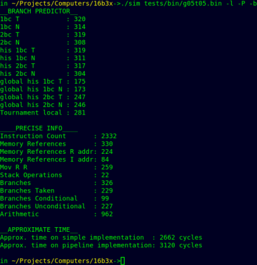

main
go back
date: 2023-04 to 2023-06 ; 2023-08 to 2023-09 ; 2023-12 to 2024-01 ; ? still WIP
desc: third CPU design, vastly more complicated than previous designs ; implemented cache, pipelining, out of order execution
proj: https://github.com/sarvl/16bit_cpu, does not contain partially implemented features
OVERVIEW
to read about current implementation and skip historical info, read following sections:
OVERVIEW
ISA
ASSEMBLER
SIMULATOR
TESTS
CHIP DESIGN
CACHE V1
OUT OF ORDER EXECUTION V2
BRANCH PREDICTION
PERFORMANCE EVALUATION
this project took a lot of time and is, by far, my most interesting one
there are a lot more features in this one than in previous designs which is indicated by length of this page
there are around 9000 words
yet there are still sections Id like to improve
most modern implementation is quite aggressive in extracting every bit of performance available
it implements instruction cache, superscalar out of order execution, branch prediction, instruction elimination and memory dependency prediction
unfortunately hacking around features leads to mess with files, ill try to sort it out as soon as LSQ and PR sharing is implemented which will take some time
project is still not finished but RN I am working on another one and had to focus on school stuff so couldnt and cannot progress on this one
not everything in this post is written chronologically (eg assembler macros were implemented fairly late) but it does not make sense to split them
regarding unfinished state, in this post there are MANY instances of "this will be improved" or something similar
I really DO mean it, the problem is that I dont have a lot of time that I can dedicate to improving this project and so I have to prioritize
currently (that is, when I am working on THIS project) the main priority is LSQ and PR sharing as thats all I want to add in terms of CPU features, for now
this is the last project that focuses exclusively on simulation
while there still are interesting things that could be done, it is much more interesting to work on something that can be executed on real HW
except maybe for learning verilog
since this text is so long it is inevitable that some mistakes crawled in
ISA
this time it does not make sense to write entire ISA here, this is just overview, see full document
Instructions
- nop # ---
- hlt ccc # IF(FL & ccc) { halt }
- #
- #
- #
- mov Rd, Rs/imm8 # Rd <-- Rs/imm16
- rdm Rd, Rs/imm8 # Rd <-- M[Rs/imm16]
- wrm Rd, Rs/imm8 # M[Rs/imm16] <-- Rd
- #
- #
- #
- #
- rdx Rd, Es # Rd <-- Es
- wrx Ed, Rs/imm8 # Ed <-- Rs/imm16
- psh Rd # SP <-- SP - 2 ; M[SP] <-- Rd
- pop Rd # Rd <-- M[SP] ; SP <-- SP + 2;
- mul Rd, Rs/imm8 # Rd <-- Rd * Rs/imm16
- cmp Rd, Rs/imm8 # Rd - Rs/imm16
- #
- tst Rd, Rs/imm8 # Rd & Rs/imm16
- jmp ccc Rs/imm8 # IF(FL & ccc) { IP <-- Rd/imm16 }
- cal ccc Rs/imm8 # IF(FL & ccc) { LR <-- IP; IP <-- Rd/imm16 }
- ret ccc # IF(FL & ccc) { IP <-- LR }
- #
- add Rd, Rs/imm8 # Rd <-- Rd + Rs/imm16
- sub Rd, Rs/imm8 # Rd <-- Rd - Rs/imm16
- not Rd, Rs/imm8 # Rd <-- ~ Rs/imm16
- and Rd, Rs/imm8 # Rd <-- Rd & Rs/imm16
- orr Rd, Rs/imm8 # Rd <-- Rd | Rs/imm16
- xor Rd, Rs/imm8 # Rd <-- Rd ^ Rs/imm16
- sll Rd, Rs/imm4 # Rd <-- Rd << Rs/imm4
- slr Rd, Rs/imm4 # Rd <-- Rd >> Rs/imm4
M[x] means memory at address x
Rx means value of register x
Ex means value of External Register x
IP LR SP FL are particular ERs
instructions here take 16bit immediate even though only 8bits of immediate can be specified in instruction, this is thanks to UI ER
Instruction Format
in previous designs, opcode is always in the same place, this is convienient but wastes space for reg-reg instructions
since r-r instructions require less bits then for them first 5 bits are 00000 and opcode is located at the end
if the first 5 bits are not 00000 then instruction is r-immediate
this way 63 different instructions are possible, here opcode place determines only whether second operand is immediate or register
registers and immediate are still always in the same spot which makes decoding fairly straightforward
R-format:
00000BBB CCCDDDDD
from MSb to LSb:
5 bits are 0
then 3 bits denote Rd/ccc/Ed
then 3 bits denote Rs/Es
then 5 bits denote opcode
I-format:
AAAAABBB IIIIIIII
from MSb to LSb
5 bits denote opcode
then 3 bits denote Rd/ccc/Ed
then 8 bits denote imm8
for example, mov R1, R2 is encoded as 00000 001 010 00101
mov R1, 0xAB is encoded as 00101 001 1010 1011
Registers
General Purpose
External
- IP ; Instruction Pointer ; points to NEXT instruction
- SP ; Stack Pointer ; points to bottom of the stack
- LR ; Link Register ; points to return address of call
- ; ;
- UI ; Upper Immiediate ; 8 LSbits denote 8 MSb of imm16 for instructions with immediate
- FL ; Flags register ; 3 LSbits of this register denote flags set by previous instruction
- ; ;
- CF ; CPU Feature Flags ; each bit denotes whether particular extension is present or not
Example Program
#progam computing fibonacci number
mov R0, 0
mov R1, 1
mov R7, 7
cmp R7, 0
jmp LE end
loop:
mov R2, R0
mov R0, R1
add R1, R2
sub R7, 1
jmp GE loop
end:
hlt
#UI usage
#R0 = xFF00
wrx UI, 0xFF
mov R0, 0x00
SIMPLE IMPLEMENTATION
compared to previous design, this time VHDL code was organized and entire thing was split into subcomponents and files
testbenches were in separate file so it is was no longer necessary to reanalyze them every single time any change was made
as for the design, for reasons unknown to me in the present, component was created for every possible logic gate usage
for example, AND of 2 3bit vectors was needed so component gate_and2_3bit was created
clearly this approach does not scale, it is also completely unneccessary as a & b where a and b are bit vectors is completely valid vhdl
similarly decode component outputs long list of signals and instead of defining custom type, every signal was created separately within processor again
each cycle instruction is decoded and everything works almost exactly as it is specified in the ISA, small glue code is needed to make it work
overall this is quite straightforward implementation with not many interesting features
there is 1 significant improvement compared to previous VHDL CPU, unified memory was implemented by use of additional cycle_advance control signal
its important to note that this project STILL does not concern itself with reality too much
even though it is more detailed than HLL behavioral implementation, there is no concern with real gate delay, synthesis and putting it to anything physical
though I tried to use something that at least could synthesise, I have absolutely no expierience in it and so cannot make good judgments
PIPELINE
ommiting description of atrocities mentioned above on a larger scale
the pipeline is very shallow, has only 3 stages
fetch/decode - execute/memory - writeback
compared to classical RISC pipeline:
- fetch/decode are merged as this was simpler to implement
- execute/memory are merged as there was no reason to split them, only PSH and POP use mem and ALU but this can be done in parallel
thanks to this simplicity, data hazards are significantly reduced and each can be solved by forwarding from deeper stage
control hazards dealt with by simply not acknowledging their existence
as mentioned before, this project does not concern itself with reality so if branch is detected in execute stage then address to fetch is updated
fetch/decode stage then starts fetching from next address and still has time to decode in 1 cycle
the same mechanism used to share memory in simple design is used to protect from structural hazard
whenever memory instruction is detected, pipeline is stalled and currently executing instruction accesses memory
this is slightly suboptimal as instructions could proceed anyway, it is enough to insert pipeline bubble
but since this is the only possible source of stall, no performance is ever lost because of it
external registers, despite being a nice idea, are somewhat annoying to implement correctly in all cases
for example, current instruction might be writing to IP so next instruction is invalid, this requires detecting that instruction is WRX and writes to IP
fortunately for simple pipeline and lack of exceptions/interrupts, they are quite easy to do right
each instruction reading from/writing to external register does so in execute stage
this guarantees that even if next instruction needs that register, it can be forwarded from execute to fetch stage
there is 1 more problem, self modifying code does not work
only the most recent OOE implementation deals with this so all non-simple designs from now on have this problem
CACHE V0
the cache is 2 way set associative, write through, write allocate
it is completely invisible to the CPU and is implemented as subcomponent of memory
assuming memory access is 10x as expensive as cache access, entire program 4x as fast as without cache
delay can be modeled simply as:
check whether data is in cache
if not => long delay
if yes => short delay
implementation does not concern itself with implementing write through, again through wishful thinking it just works
Full Image
each cycle is denoted by vertical edge (since clock waits in high state)
it is very easy to see loops, when instructions are cached it takes less time to access them
delays within loops are caused by some other memory access
ASSEMBLER
this description is not about old implementation but rather current state since it is only a tool used for main project part
clearly I do not have a lot of expierience in compiler development and so some design choices are at least suboptimal but it does its job
as a way to simplify coding it was necessary to implement macros, it is nowhere near macro system of modern assemblers but it did help write more complicated programs
General Operation
first tokenization is performed for each line
tokenizer detects special characters, start and end of various structures, labels, etc
then each token is added to a vector of tokens which is then to be verified and processed
initial processing evaluates and expands macros (see Macros), processes attributes (see Attributes), finds labels and counts instructions
this step also ouputs labels to symbols.txt to allow for easier debugging with simulator
then each label is identified and replaced with correct offset
labels MUST be referencable before they are created to allow any useful structures so this part has to be AFTER label identification
then expressions are processed in order (see Expressions)
each expression is inside {} so it is very easy to find them
this step also has to be last because expressions can use labels to calculate offset
for example {array 2 +} to access 2nd entry of array
finally, output is created and verified
this step is really boring and contains no interesting features
Expressions
I did not want to bother with implementation of calculator but it was important to have expression evaluation
therefore the assembler uses postfix which can be evaluated by walking left to right and popping/pushing data onto/from stack
for example instead of writing 3 * (4 + 5), one writes {4 5 + 3 *}
all binary operations are implemented (except shift for which divide can be used)
Attributes
this feature is still a stub, currently supports only ALIGN which inserts NOPs to align code
Macros
Overview
macros can be created with
- @def constants (expressions) that are used (and implemented) like labels
- @macro [...] @end multiline (can also be used for single line) that have their entire body copy-pasted
example syntax:
@macro bne(x, y, z)
cmp _x, _y
jmp LG, _z
@end
@macro halt
hlt LEG
@end
@def count 10
@macro zero
0
@end
@macro add_one(x)
{_x 1 +}
@end
mov R0, @zero
mov R1, count
loop:
add R0, @add_one(0)
@bne(R0, R1, loop)
@halt
main limitation is lack of support for nested macro use, due to how they are implemented
Implementation
only single pass is used to implement inital processing so multiline macros have to be defined before they are used
there is no error for using undefined macros
@def macros are very simple to implement by hijacking label system
this also means they dont have to be defined before they are used because labels have additional pass
whenever @macro is encountered, it is simultaneously parsed, verified and added to special vector with macros
after parameters are parsed, entire body is copied and saved (with small modifications to detect parameters)
then whenever macro is referenced it is checked for argument count
(only one macro can have a given name, even though they could be differentiated by different argument count)
if they match, macro's body is pasted and arguments are inserted, code is later evaluated as if it was written normally
one inconvienience is that line number is lost, this is to be fixed
SIMULATOR
Overview
the most important feature of simulator is to test whether particular program is written correctly
this is possible because simulator is the simplest implementation of ISA and so is trivial to get correct
each instruction is simulated according to ISA and the simulator does not concern itself with details of any particular implementation
except of gathering enough data to precisely output cycles taken by simple and pipelined implementation
additionally with certain options simulator can be used for debugging and detailed performance evaluation
all options descriptions can be obtained with sim -h
Verification
there are 3 options dedicated for verification
- -r outputs register dump
- -m outputs memory dump
- -w outputs potential warnings
-r is mostly used for manual verification
tests heavily rely on -m output to check whether correct output is the same as implementation's output
(see Tests)
warnings verify few features, currently check whether each address is aligned and whether SP is back to 0 at the end
Debugging
there are 3 options dedicated to debugging
- -d interactively step thru instructions
- -v verbose output of what happens
- -s replace magic numbers with labels
it rarely makes sense to use -v or -s without -d
while debugging, certain commands can be used, unfortunately they are stubs of what should be available and this is still to be improved
for this reason they are also not documented
fortunately most of the time it is enough to simply see currently executing instruction
verbose output allows to see instructions in more detail
eg each arithmetic instruction prints its operands' values and result of operation
symbols option uses output from assembler (symbols.txt) which assigns labels to their addresses
main use of this feature is to simplify following of JMP and CAL where destination IP gets replaced with name used in program
Performance Evaluation
there are 2 options dedicated to performance testing
- -i outputs how many times each instruction was executed
- -p outputs useful info for perf testing
-i is very straightforward and mainly useful to check what should be improved
for example, if most instructions are MOV then it makes sense to see whether that can be improved
-p outputs generally more useful info
- frequency of instruction categories
- memory reference count
- different branch predictor accuracy
- cycle time particular program would take on simple and pipelined implementation
the code to check branch predictor is a mess because it updates a lot of data and decreases readability of code
I am still looking for some solution

Full Image
TESTS
Overview
for any project this size proper testing is a must to make sure implementation is at least somewhat correct
tests are grouped based on what they test
- ALU - arithmetic operations
- JMP - jumps, calls, returns
- MEM - memory operations
- STK - stack operations
- EXR - external registers
- OTH - other, mainly big programs with no particular test goal
- PRF - performance, currently only branch predictor
some of these tests came from hours full of blood, swears, tears, swears and swears
main purpose of tests is to check tricky scenarios like self modifying code or dependency chain
as well as big programs which often expose problems not found elsewhere due to their complexity
Implementation
each test has 3 components
- code
- binary
- correct output
code is used only to generate binary
binary is used as input to tested implementation
tested implementation outputs memory dump which is then compared with correct output
clearly this implementation has major flaw, it requires memory to work which is not given when implementation is new
before memory works somewhat it is enough and not too hard to look at waveform
REWORK
ISA Extension
up to this point, lack of multiply instruction caused significant slowdown of EVERYTHING that required multiplication
because mul had to be implemented in SW and so took significantly longer
for example
with SW multiply factorial takes 156 instructions
with HW multiply it takes 86 instructions
since noone uses this ISA it could have been just modified but I decided to go proper route and add proper extension flags
this required introducing some ISA change but now new features can be added and simply set bit in CPU Feature Flags Register
this register is readonly external register (writing is possible to encode but has no effect)
for now this is the only extension provided, there are some new in next draft which could speed up common operations
not sure when or if they will be added
Simple
overall architecture did not improve drastically
main improvements came in fixing stupidies that arose in first implementation
control signals were bundled together and useless constants were removed
and logic gate duplication was removed
Cache
removed code duplication so now cache became single file that can be easily swapped with RAM and integrated into pretty much any implementation
overall architecture did not change
Pipeline
similar improvement were added to pipeline implementation as to simple one (see Simple Rework)
pipeline now has 4 stages
- fetch
- decode
- execute/memory
- writeback
as before, some writeback also happens in execute stage
whenever stage 2 (execute) detects that bubbles should be inserted (see reasons below) then instruction in decode is overwritten with NOPs
every potential hazard that modifies any ER (in particular, IP) has been resolved by now and instructions are fetched from correct IP
bubbles (NOPs) can be inserted for 2 reasons
- branch taken, since each branch is predict not taken (much simpler implementation)
- write to external register
branch predict NT is generally speaking a mistake that simplifies implementation at the cost of performance
similarly second reason should not happen always, current OOE implementation (see OOEV2) covers case WRX UI
said implementation features RAS which removes the need to implement LR fast
since pipeline does not have it, each procedure call induces SIGNIFICANT cost
it is usual to see same code take 1.3 as many cycles on pipeline as on simple implementation
(of course, that 1.3 cycles is still much faster if pipeline's clock is 1/3 of simple's clock, but it could be better with even simple BP)
Aside: Branch Delay Slot
branch delay slot is not a solution, it is terrible idea that introduces subtle complexities
see https://devblogs.microsoft.com/oldnewthing/20180416-00/?p=98515
it exposes microarchitectural details that may not (and probably are not) relevant later
MIPS R10000 is out of order processor that has to support branch delay slot even though it is no longer relevant, quote:
In a pipelined scalar processor, this delay slot instruction can be executed for free, while the target instruction is read from the cache.
This technique improved branch efficiency in early RISC microprocessors.
For a superscalar design, however, it has no performance advantage, but we retained the feature in the R1OOOO for compatibility
earlier example: R4000 is 8 stage pipeline with branch in 4th stage (counting from 1)
aside within aside: despite first MIPS having execute as 3rd stage, branch target is generated in 2nd half of 2nd stage
branch condition is checked in 1st half of 3rd stage and i$ is accessed in 2nd half of 1st stage
so, in the same cycle, branch is checked and i$ is accessed using previously generated address
end of aside within aside
but this processor still supports 1 instruction branch delay slot because that how ISA specified things
even though in this microarchitecture it makes no sense
simliar but significantly less annoying problem happened to ARM with its IP
essentially at each point IP is IP of that instruction + 2 because of 3 stage pipeline
see https://stackoverflow.com/questions/24091566/why-does-the-arm-pc-register-point-to-the-instruction-after-the-next-one-to-be-e
OUT OF ORDER EXECUTION V0
First Try
in general it is worthwhile to implement something knowing only how that something is supposed to work
this allows to see why something is done in some way
at that time I only knew that OOE CPUs use some kind of buffer and dispatch instructions to execution ports
additionally since each instruction takes only 1 cycle ive decided to go superscalar as well
the main idea is to fetch instructions and if an instruction can be executed, execute it
if not then it is put away to buffer
this works quite differently than implementations that rely on ROB where instruction is fetched to buffer either way
whenever only 1 currently fetched execution executes, get one from buffer that by this time is free to execute
whenever buffer has 2 entries, fetch 2 instructions from buffer
in case they have dependency on eachother, fetch only first
constantly check dependency on buffered instructions
I dont remember the exact reason this approach was scraped, it was because something could not possibly be implemented using buffer and memory at once
unfortunately it is not documented exactly anywhere and the code is long gone
I definitely want to revisit this idea because it is different than current implementations and sounds interesting
important thing to consider is implementation of precise interrupts/exceptions because there is nothing that can invalidate instructions
diagram I drew then to show how instructions are moved around:
Y means fetch from memory while N indicates that data was fetched from buffer only
Full Image
Second Try
Implementation
this time I decided to see how generally OOE processors work and ive seen the term reorder buffer
to not dwelve into details and spoil the fun ive implemented collapsing queue
the obvious downside, visible on the picture, is HUGE logic that is required to determine dependences
dependency checking is also quite complex and has to check for pretty much every ordering constraint
each possible execution hazard for X and Y:
1. Y writes to register used by X
2. X/Y is HLT
3. X is WRM and Y is WRM/RDM
4. Y is first and Y is RDM/WRM and X is RDM
two WRM/RDM instructions cant execute at once
case when X is WRM is covered by 3 and 4
5. Y is first and Y is MUL and x is MUL
two MUL cant execute at once
6. X/Y is jmp/cal/ret/wrx/rdx
this is more restrictive than neccessary
however this simplifies circuit significantly
and the rdx/wrx are not frequent enough
for this restriction to have significant (if any) impact on performance
7. X modifies register and Y is WRM and writes that register
comment on frequency of RDX/WRX is wrong, for example g05t05.asm executes 245 WRX compared to only 201 RDM
that is, it is more likely that a given instruction will modify external register than read data from memory
of course this highly depends on tested program, but the point is, WRX has to work fast, at least for UI
the CPU works like follows:
find up to 2 instructions such that nothing depends on them (check for dep_XonY)
fetch and decode instructions from memory
move 1 or 2 instructions from buffer and simulateously insert up to 2 new instructions (decoded in previous cycle)
due to the way it works, startup (and branch misprediction) delay is 2 cycles
lack of proper branch prediction and quite high branch misprediction penalty made performance much worse that it could be
some speedup was achieved by starting branch execution while still in buffer but that just reduced the penalty
it works by checking if first instruction is branch and that branch is T
(T is determined by having additional copy of separate early flag register)
if so and branch target is known early (uses immediate as destination) then fetch address is changed
note that there is no danger with WRX because that branch MUST be first in buffer
and really it could also be done without limitation on immediate destination but this way it could be done without extending datapath too much
since registers could only be read by execution units
Performance
fibonacci got WORSE from 54 to 58 cycles
main problem is that there is not a lot of parallelism to exploit and branches are very costly
after adding alignment such that main loop is aligned, performance improved from 54 to 45
factorial got twice as bad as it was on simple implementation
again due to many calls and branches
matrix multiply (after optimizations) executes in around 0.9 time of simple implementation
thats abot 400 cycles, compared to 272 max achievable right now (see Benchmarks)
highly advanced mechanism used to see what should happen when:

Full Image
test framework has been implemented (see Tests) so bugs are easier to spot
assembler and simulator (see Assembler see Simulator) were mostly improved around this time period
OUT OF ORDER EXECUTION V1
Overview
this implementation works quite similarly to typical OOE implementation
instructions are fetched to 8 entry ROB which also serves as storage for in-flight data
if instruction has all dependences satisfied and it is first (or second) that can be executed then it is executed
if oldest instruction(s) have completed then they are retired
up to 2 instructions are fetched, executed and retired per cycle
Dependency Management
main problem of previous implementation was very costly depedency check
in principle ROB and register renaming solve this issue
my implementation, however, was so terrible that it was undebuggable mess with many edge cases
it was never fully finished, instead next implementation chose different approach and dep management became trivial
code fragment that is responsible for proper dependency forwarding:
rob0_src0 := (2 DOWNTO 0 => instr0_r0, OTHERS => '0') WHEN instr0_cf = '1'
ELSE i0_val WHEN RAT(rat00_e).in_rf = '1' AND i0_rd = instr0_r0 AND i0_we = '1'
ELSE i1_val WHEN RAT(rat00_e).in_rf = '1' AND i1_rd = instr0_r0 AND i1_we = '1'
ELSE instr0_r0v WHEN RAT(rat00_e).in_rf
ELSE ROB(to_integer(unsigned(RAT(rat00_e).rob_entry))).src1 WHEN ROB(to_integer(unsigned(RAT(rat00_e).rob_entry))).complete = '1' AND ROB(to_integer(unsigned(RAT(rat00_e).rob_entry))).controls.sro = '1'
ELSE ROB(to_integer(unsigned(RAT(rat00_e).rob_entry))).value WHEN ROB(to_integer(unsigned(RAT(rat00_e).rob_entry))).complete = '1'
--please forgive me for this monster line, very bad
ELSE mul0_res WHEN exe_entry0p = '1' AND ROB(to_integer(unsigned(exe_entry0))).dest = instr0_r0 AND RAT(to_integer(unsigned(instr0_r0))).rob_entry = exe_entry0 AND ROB(to_integer(unsigned(exe_entry0))).controls.mul = '1'
ELSE mul1_res WHEN exe_entry1p = '1' AND ROB(to_integer(unsigned(exe_entry1))).dest = instr0_r0 AND RAT(to_integer(unsigned(instr0_r0))).rob_entry = exe_entry1 AND ROB(to_integer(unsigned(exe_entry1))).controls.mul = '1'
ELSE alu0_res WHEN exe_entry0p = '1' AND ROB(to_integer(unsigned(exe_entry0))).dest = instr0_r0 AND RAT(to_integer(unsigned(instr0_r0))).rob_entry = exe_entry0
ELSE alu1_res WHEN exe_entry1p = '1' AND ROB(to_integer(unsigned(exe_entry1))).dest = instr0_r0 AND RAT(to_integer(unsigned(instr0_r0))).rob_entry = exe_entry1
ELSE (2 DOWNTO 0 => RAT(rat00_e).rob_entry, OTHERS => '0');
slightly different code was for each possible source, there were 4 sources for operations in single cycle
details of what, why and where are not really important, whats important is that this is stupidly complex and could not work well
Branch Prediction
simple 2bc branch predictor (and not working RAS) have been implemented here
there are not many differences between it and current design except current is more robust and not broken
(see Branch Prediciton)
Performance Comparison
despite being broken, some tests passed and so performance could be compared at least somewhat
matrix multiply improved from 485 cycles on simple implementation to 276 on OOE implementation
CHIP DESIGN
previous designs were all sort of inserted into CPU, while this time CPU is part of system
this provides much better ability to extend it with more memory chips, IO or multiprocessing
this allows all components to work independently of each other knowing just BUS interface and using same clock
this goal is much harder to achieve than I thought
cache implementations do require modifications to how data is sent to/from memory from/to CPU
especially write back
additionally simple and pipeline implementations were rewritten again but there is nothing interesting about that
CACHE V1
Overview
given how the system works, cache must work much more realistically
there are 2 implementations of cache, write-through and write-back
System Interaction
waiting for data is implemented by chip stalling clock to a given component
it could be implemented with each component having internal wait state but it works quite well
Write Through
Read:
- CPU sends request to read address
- cache checks said address
- if address is contained by cache, request is satisfied
- else, request is send to memory
- data comes back, is sent to both CPU and cache
Write:
- CPU sends request to write address
- request is sent both to cache and to memory
- if address is present in cache, it is updated
- CPU returns back to execution
Write Back
Read:
- CPU sends request to read address
- cache checks said address
- if address is contained by cache, request is satisfied
- else, if something has to be evicted, then it is evicted first
eviction process looks like regular write from CPU with no cache, except CPU is completely stalled and request is sent from cache
- conflicting entry is no longer present in cache and proper one is fetched from memory
- data comes back, is sent to both CPU and cache
Write:
- CPU sends request to write to address
- cache checks said address
- if address is contained by cache, request is fully satisfied
- else, if something has to be evicted, then it is evicted first
eviction process look like regular write from CPU with no cache, except CPU is completely stalled and request is sent from cache
- conflicting entry is no longer present in cache and proper one is written to cache
note that read can potentially cause write to memory but write cannot
Inner Workings
none of implementation details can be observed by CPU, except by measuring time to satisfy requests
Write Through
the cache is write allocate, DM and has 128 entries, each containing 2B of data
on read, address is compared against stored tag
if they are equal, data is returned
else miss is asserted
on write, data is always written and entry is updated accordingly
Write Back
the cache is write allocate, 2 way SA and has 256 entries, each containing 2B of data
on read, cache compares data from 2 entries
if hit occured, return data and set LRU to other entry
if there is a read miss, then entry to evict (denoted by LRU) is sent to memory and removed from cache
after that there is free entry to which data from memory (requested by CPU) is inserted
at the end LRU bit is set to point to OTHER entry
writes work exactly like reads except after a miss and potential write to memory data is satisfied from CPU
note that read causes at most 2 memory accesses while write causes at most 1
obvious and commont optimization is to include dirty bit to evict entry only when necessary
in fact, the implementation does exactly this
one problem came up because tests (see Tests) work by dumping memory contents
in cache write back then by design, memory does not contain most recent copy
therefore there is no guarantee that on halt correct value is dumped
the solution copies memory content to a buffer (simulation only)
then checks cache contents and changes values of that buffer wherever cache contains newer copy
Performance
write through cache waveform is mostly the same as previously
Full Image
notice that:
- around 0ns there are no cache misses and so cpu is stalled only for single cycle when accessing memory
this is because initially instructions are loaded into cache
- around 100ns cache misses occur but they do not cause eviction
therefore theres single memory access
- around 200ns misses that cause eviction appear
first they do some internal work, then access memory TWICE
with write back cache, mat mult takes 879 cycles
without mat mult takes 4363 cycles
in other words, cache provides near 5x speedup
OUT OF ORDER EXECUTION V2
Overview
out of order 2 way superscalar CPU with internal cache, branch prediction, and instruction elimination
Physical Registers
in this implementation data is not stored in ROB but instead ROB holds pointers to data
managing dependences now is as simple as managing Physical Register pointers
additionally, less data has to be moved each time an operation is to be made, but this is not big concern for simulation
entire dependency management now (for one execution port):
FOR i IN 0 TO par_rob_size - 1 LOOP
rob(i).prfs0_p <= '1' WHEN rob(i).present = '1' AND rob(i).prfs0_id = eu0.rd AND eu0.signals.rwr = '1' ELSE UNAFFECTED;
rob(i).prfs1_p <= '1' WHEN rob(i).present = '1' AND rob(i).prfs1_id = eu0.rd AND eu0.signals.rwr = '1' ELSE UNAFFECTED;
END LOOP;
prf_present(to_integer(unsigned(eu0.rd))) <= '1' WHEN eu0.signals.rwr ELSE UNAFFECTED;
inserting data into ROB is as simple as setting correct PR id and present bit
to simplify implementation, 1 PR is provided for each ROB entry but this is not necessary
in fact this is pretty wasteful as it is very unlikely that every instruction writes to register
for example Intel haswell has 192 entry ROB and 168 entry PRF
however PRF is much less convienient to debug, after all the entire point is that at one point values from 1 AR can be in many PRs
since now there is no ARF and it is really useful to check actual values, CPU contains simulation only signals that read current mapping
these mappings are then shown in waveform in addition to PRF so it is straightforward to see current mapping and check whether something goes wrong
for now, lack of PR sharing (see Mov Elimination) allows to also have great sanity check
whenever 2 AR map to the same PR then there is definitely something wrong going on, no matter the result of the program
this prevents errors that do not manifest themselves to memory
and whenever it happens there is obvious thing to check instead of trying to diagnoze what even broke like has to be done usually
Instruction Elimination
NOP
just not add it to ROB
UI
Upper Immediate is absolutely crucial to get fast, as anytime data requires more than 8 bits UI is used
for example when there are more than 256 instructions, jump dest will require upper immediate
most of the time wrx UI, imm8 instructions fall into category of ignored ones so they dont need to execute at all
whenever second operand is not immediate but register, execution is serialized
I have not yet encountered single real program use for this instruction
there are two cases
1. wrx UI, imm8 is aligned
UI value is directly accessible for next instruction to use so this instruction immediate is merged with next one
2. wrx UI is not aligned
value has to wait until next instruction is fetched so data is simply stored for some number of cycles
either way, wrx UI is not even inserted into ROB
this optimization is possible since it is known that no external event can ever happen
specifically it cannot ever happen between consecutive WRX UI, imm and OP R, imm
Mov Elimination
currently only a stub is implemented that provides performance boost nonetheless
whenever instructions of the form mov R0, R1 ; op R0, R2 are fetched
they are internally replaced with op R0, R1, R2
overall, this is major problem of ISAs with 2 operand instructions and is one of the reasons why x86 processors have to implement mov elimination
WIP
Flush Mechanism
each time a branch is mispredicted or write to instruction occurs or UI value could not be retrieved a flush occurs
all instructions are removed from the ROB and execution restarts at first known point, that is after instruction that caused flush
this is (should) be very well tested mechanism without any flaws
because if something is flushed when it shouldnt or not flushed when is should, illusion of sequential execution is broken and all bets are off
and overall it works as it should for branches and UI flushes
for some reason however write to instruction causes it to reexecute the instruction that caused flush
which works almost almost almost always, if instruction writing on memory happens to be on address that map to the same entry in bloom filter
for example when write to x0500 is at x0050
Self Modifying Code Detection
the very annoying yet necessary thing to protect execution against
each time an instruction is fetched, its address is stored into bloom filter
specifically: entries corresponding to {low 8bits ; high 8bits ; middle 8bits} are all marked with '1'
then each time any sort of write is performed, it is checked whether bloom filter contains that particular address
if it does then machine flush is performed and currently problematic instruction reexecutes
importantly if there IS write to instruction then it IS detected
converse is not true, its relatively easy to construct addresses that are different but map to the same entry
for example, with current hashing x0500 and x0050 map to the same entry
as long as it happens rarely enough, it's fine because of significant space reduction
64kib (1 bit for each address) is compressed down to 256b
another solution is to have 2 separate bit vectors, each with 256b
first stores whether high part of address appeared somewhere and second stores whether low part of address appeared somewhere
this way false positive requires write to high and low part that appeared somewhere but not at once, this is less likely
especially because code is usually at x00XX and data is usually stored at higher addresses
(either because of stack or simply convienience)
Internal Instruction Cache
Overview
external cache requires a lot more time to access, even if it is much faster than memory
internal cache can be wired independently of memory bus so code being supplied from cache makes memory bus free
so instructions that use memory can do so whenever they need without fighting with processor fetching next instructions
Implementation
I$ is implemented simply as DM cache with space for between up to 64 instructions (assuming ideal distribution and alignment)
each time instructions are fetched they are added to that cache
since this cache is assumed read only (if that assumption is violated, see below) there is no problem of writethrough/writeback
Self Modifying Code
such cache only makes SMC worse (see Self Modifying Code) as not only ROB but every instruction that was ever fetched have to be flushed too
it is possible to augment SMC protection such that cache flush is not necessary
if write to instruction is detected from BF then flush that particular line from cache (if it is present)
since it is possible that write happens to instruction that was fetched before BF flush
there should also be additional check against cache content
for example, instruction at index i caused flush of BF, instruction at index i + 2 is still in cache but instruction i + 1 writes to i + 2
this should improve performance against false positive SMC detection
Performance
matrix multiply without i$ takes 321 cycles
with i$ it takes 313 cycles
Full Image
main gain comes initially, notice that a bus is often yellow, that indicates it is unused
Speculative Memory Operations
Motivation
currently memory operation has to be first-to-retire to execute, this needlessly slows down execution, especially for loads
main issue is dependency chains, slower retirement is not a huge problem, however fixing it also speeds up code by few cycles
slower retirment happens when memory operation is first-to-retire instruction
it has to execute and retires in following cycle which makes it impossible to sustain constant retirement
however rob is usually not full and so at some point that loss 1 less retired usually disappears
Prediction
quite simple and effective method utilizing bloom filter similarly to SMC protection (see Self Modifying Code Detection)
works like follows:
execute loads and stores as soon as possible, marking written addresses in bloom filter
on each read, check bloom filter, if hit perform flush since that means that probably something had writted to this address
of course this is suboptimal when data is read from memory after being written often
nonetheless, significant performance gain is achievable
on simulator (in asm):
with this method: 1903 cycles
without: 2009
on matrix multiply:
with: 272 cycles:
without: 313 cycles
Load Store Queue
WIP
Performance Bugs
I-Cache Slowdown
I$ caused performance of matrix multiplication to be worse than without it
it turned out SMC protection (see Self Modifying Code Detection) caused this degradation
since I$ allows to load instructions faster, more addresses are hashed into BF
pure chance caused them to conflict more often with current writes
since there were more conflicts, there were more flushes which are quite expensive
with SMC protection disabled, performance improved by few cycles
Bigger ROB But Worse Execution
bigger ROB should allow for more instructions to be in flight
and thus improve performance because there should be more instructions to extract parallelism from
especially with i$ which should reduce the need to have better memory bandwidth
it turned however that after extending ROB from 8 to to 16 entries, performance was worse
the problem was execution priority
arithmetic instructions had higher priority than memory operations
(even if memory operation was to-be-retired instruction that blocked retirement)
it is less of a problem with 8 entry ROB where it can cause at most 4 cycles (2 execution units, 2 instr/cycle)
but with 16 entries there can be twice as large slowdown
in practice such slowdown is VERY unlikely but smaller one really did happen
especially in the larger programs that execute for more time
(tested on some program, dont remember which)
originally performance (with i$) degraded from 2105 => 2132
after fix, baseline improved to 1980 and bigger rob did not improve perf
BRANCH PREDICTION
well working BP is essential for any meaningfull perf gain
determining best BP to use is quite complicated problem and my use of small programs does not fully address complexities
simulator implementes few branch predictors but they occupy most of the code and drastically reduce readability (see Simulator)
out of the ones implemented, usually 2BP start T performs the best
although with quicksort before optimizations, 2bc history performed better
therefore thats what CPU implements for JMP
CALs and RETs are always predict taken and operate using RAS
except when CAL is indirect, see below
this prediction scheme makes fast LR not necessary as it is implemented using microarchitecture feature
typically thats all, CALs and RETs are always taken so there is no problem
however this ISA allows them to be executed conditionally, this comes mostly from how easy it was to encode it
as long as not taken path is very rare then it is fine to use it, for anything else this is bad for performance
since flags are at the same place always it is reasonably easy to check for 0b111 which is effectively unconditional jump
but thats not implemented yet
indirect branches are predict not taken always because that simplifies implementation
this is suboptimal and could be solved with BTB
albeit they are not as common and so are not that problem
verification happens at retire when branch direction is compared against flag register (also updated at retire)
if the branch direction does not agree, flush is performed
one exception being, when branch is correctly predicted it can be retired while being second-to-retire, not first
if specific conditions allow it to be known by then, then it is retired
after misprediction is detected, Register Allocation Table is restored to its commited state
then execution begins from last known instructions (see Flush Mechanism)
such recovery is fine for small ROB but for more agressive CPUs with 100s of ROB entries this is terrible approach
MIPS R10000 implements 4 such "commit" states, so up to 4 branches can be in flight at once
then if misprediction is detected state of machine is restored to corresponding branch's "commit" state
after all, certain program originally had 256 misses and took 1562 cycles
with 2BC branch predictor it has 3 misses and takes 1055 cycles
Performance Counters
despite what simulator provides, it is inconvienient to try to replicate implementations, especially complex ones, in another simulator
therefore CPU has some counters to check how many cycles there were with specific event
this is very useful to identify bottlenecks and find what potentially could be optimized
current list:
- miss - branch miprediction
- fetch - fetched at least 1 instruction from memory
- cache - fetched at least 1 instruction from cache
- retire0 - retired 0 instructions
- retire1 - retired 1 instruction
- retire2 - retired 2 instructions
- exec0 - executed 0 instructions
- exec1 - executed 1 instruction
- exec2 - executed 2 instructions
- movrr - mov register register (primarly used to check potential benefit of mov elimintation see Mov Elimination)
- movrrov - aligned pair of instructions that can be merged
- ignore - instructions not added to ROB because they dont need to execute
- flush - flushes
- w2i - write to instruction detected
- robfull - rob full
- instr - total instructions executed non speculatively (except ignored ones)
- rb1 - branch was retired while being second to retire
each decently sized program will have high count for movrr
which means that mov elimination (see Mov Elimination) has potential for significant improvement
in fact simple elimination of immediattely overwritten mov provides significant improvement
high count of exec1 compared to exec2 usually implies that there are memory operations waiting
usually only port 0 is occupied and by checking ROB contents one can see that often port1 could be occupied with memory operation
but due to depedency management it is never possible
thats the main motivation for implementation of LSQ (see Load Store Queue)
of course there is always place for more detailed counters and more optimizations, unfortunately this is the point where it ends right now
even with current state it is significantly more convienient and effective than manual inspection of waveform
The Fastest possible implementation (that is including all most interesting features)
is able to run g05t05 at 1903 cycles, this program consists of 2332 instructions and so IPC = 1.225
that number is even more impressive considering that simple implementation runs at 2662 cycles which makes fastest one run at ~0.7 time of simple one
and that this program is simulator of CPU so there is really not that much parallelism involved
matrix multiply runs at 272 cycles, this program consists of 322 instructions making it IPC = 1.125
compared to 437 cycles of simple implementation, matrix multiply runs at ~0.65 time of simple time
(low IPC comes from high rate of memory operations)
one problem with benchmarks is that it is usually not possible to make same program run well on all implementations
for example, additional alignment is potentially very useful for OOE as it may make branches effectively free while simple will be punished by additional NOPs to execute
that said, usually OOE is so much faster that simple implementation and slowdown is within noise range
main
go back